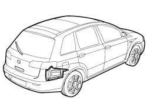
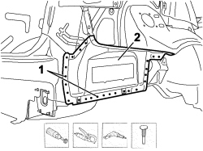
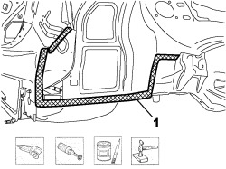
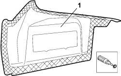
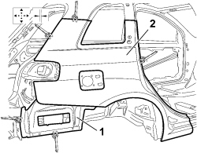
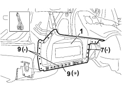
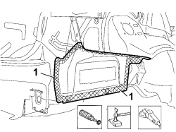
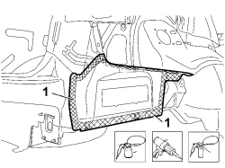

7210B50 R.R. REAR WING LOWER FRAME
- Path
- Procedures > 72 PANELS AND FRAMES > 7210 REMOVING-REFITTING > 7210B STRUCTURAL ELEMENTS (CENTRE AND REAR SECTION) > 7210B50 R.R. REAR WING LOWER FRAME
- Kind
- repair procedure (removal / refitting; the operation number is the code)
- Applies to
- all engines; all production periods
- Interactive page
- https://sloeber94.github.io/elrnDB-fCrm/en/#/194004029
Applies to: all engines; all production periods
 Removing
Removing
 Refitting
Refitting
Applies to: all engines; all production periods
Check that the components connected are not distorted by checking the bodyshell alignment measurements using suitable equipment (gauges, templates or jigs).
Straighten the body as necessary.
Use the rotary brush to clean the edges of the panel to highlight the spot welds.
1. Use the chamfering machine on the spot welds shown.
Use the drill and chamfer the spot welds not accessible with the chamfering machine.
Use the hammer and chisel to remove the spot welds chamfered previously.
2 Remove the rear wing lower frame from the vehicle.

Applies to: all engines; all production periods
Straighten the edges of the panel using a hammer and dolly block.
Remove the spot weld residues using a disc grinder.
Use a rotary brush to clean the areas treated previously.
1. Apply electro-galvanizing paint.

Applies to: all engines; all production periods
Work at the bench and remove the anti-corrosion treatment from the entire perimeter of the inner and outer parts using the rotary brush.
1. Apply electro-weldable paint to the treated edges.

Applies to: all engines; all production periods
Refitting
Removing1. Position the lower frame correctly on the vehicle and secure it using self-locking clamps.
2. Place the wing in position, secure it using self-locking clamps checking that it is perfectly aligned with the rest of the bodyshell.

Applies to: all engines; all production periods
Remove the wing from the vehicle.
1. Use a spot welder in the areas shown.

Applies to: all engines; all production periods
1. Correct any distortions to the panel using a hammer and dolly block.
Use a disc grinder to level the welds.
Use a rotary brush to clean the areas welded previously.

Applies to: all engines; all production periods
1. Apply anti-oxidant protection to the areas involved in the welding.
Seal the join lines between the replacement part and the vehicle.
Apply underbody protection.

Applies to: all engines; all production periods